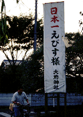
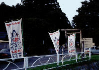
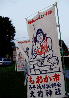
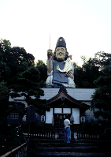
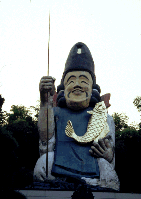
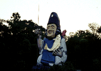
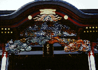
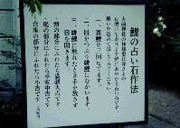

大前神社/栃木県真岡市

 
真岡近辺をドライブしていると突然目に飛び込んできた「日本一の恵比須像、大前神社」なる看板。
勿論見逃す筈はなく、看板の矢印に従った。場所は真岡市街の北東、五行川のほとりである。
ここの神社の参道は五行川に平行しており、右手に川面を眺めながら歩いていく。時刻は夏の6時。陽も傾いてきた川では子供達が釣りをしている。かなり長い、そして鬱蒼とした（参道の左手は大きな木が生い茂っている）参道からはこの神社の歴史と風格が伺える。
しかし参道が終わり視界が開けると、その想像していた風格は一気にメルトダウンする。いきなりコンクリート製とおぼしき気色の悪い恵比須像が現れたのである。
しかもその恵比須像、社宝館らしき建物の上に座っているのだ。その高さ20メートル。
確かに日本一なのだろう、こんなモン他に誰も造らないっちゅーの。

 
やけに垂れ目の恵比須さんは左手に鯉を抱え右手には釣りざおを持つポーズ。高さはあるがデーンと建っている、というような威圧感はない。顔が情けないからね。ちなみにこの神社は鯉に縁が深く（詳しいことは知らないよ）神社の人達は今でも鯉を食さないそうな。
残念ながら訪問時間が遅かったので恵比須像の下の建物には入れなかった。
建物の横には夫婦の鯉の像が10メートル程離れて置いてある。手前の夫鯉から奥の妻鯉の間を目を瞑って歩いて奥の妻鯉に触れれば御利益があるという。ま、これひとつとっても建物の中は知れたもの。


子供騙しの恵比須像とはアンバランスな程に見事な本殿などを見ているといつの間にかだいぶ薄暗くなってきた。ふと、気が付くと明らかに挙動不振なおっさんがいる。推定年齢50歳、推定職業無職。携帯電話をコイル式のストラップで腰に着けてグルグル回転しながら近寄ってくるのだ！！もう、ストラップは遠心力で伸びに伸びて携帯ヌンチャク状態。おっさん勿論ニヤニヤ。
うわ、やっばー、と思い逃げるように来た道を戻っていった。しばらくすると参道の脇から声がする。丁度子供が魚を釣り上げたようである。魚を釣り上げた小学生と恵比須像がオーバーラップした時、悟った。
さっきのおっさんは恵比須さまの使いなのかも知れない。俺が恵比須像を心の底からバカにしたから懲らしめようとして出てきたのかも知れない。恵比寿様ごめんなちゃーい。
1998.8
珍寺大道場 HOME